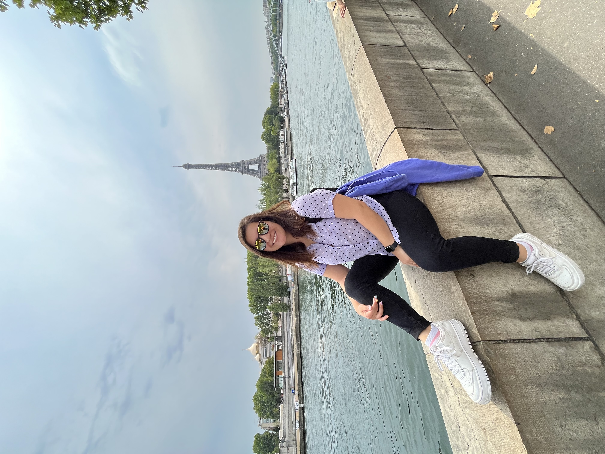
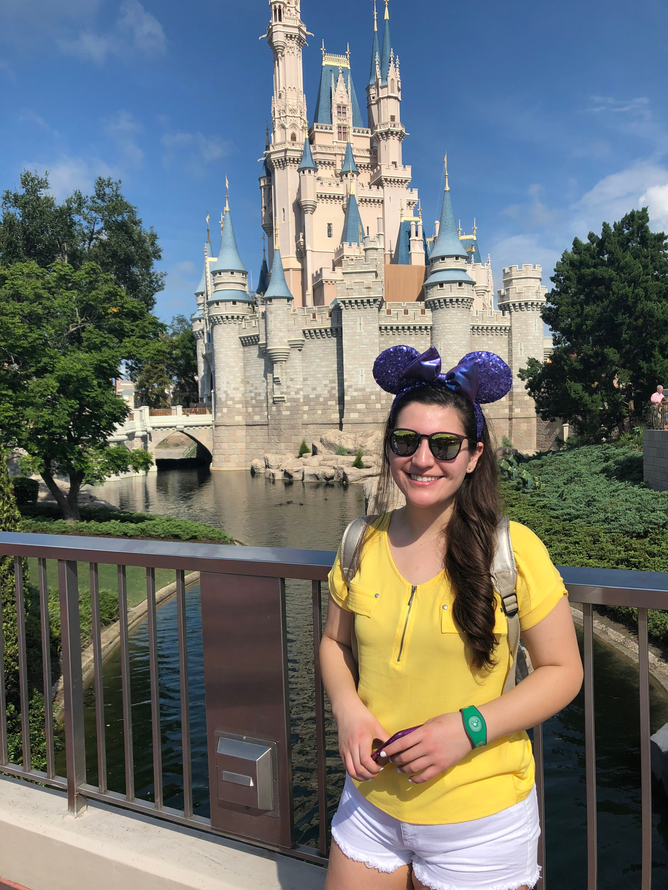
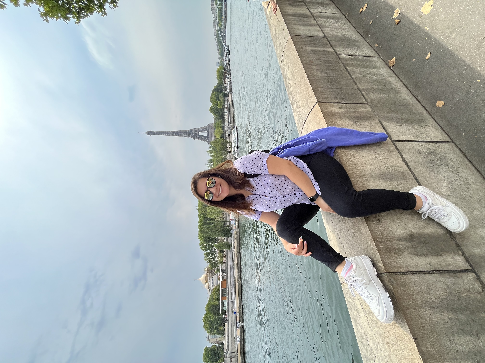
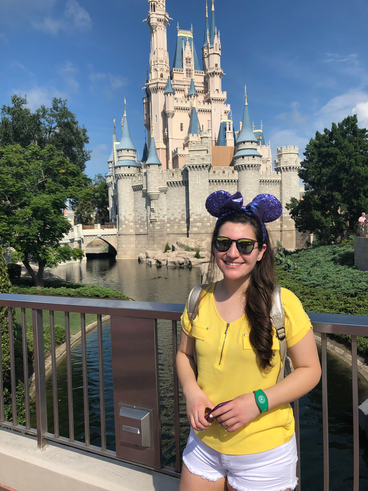

Hola! mi nombre es Javiera Galaz, nací en San Fernando, una bella ciudad de la sexta región, hoy vivo en Santiago con mi familia, mi perro y gato con los que me encanta pasar el tiempo jugando o haciéndoles cariño, aun que generalmente se portan pésimo.
Uno de mis pasatiempos favoritos es el Poledance, que llegó a mi vida para quedarse, lo practico hace un poco más de un año y me enamora cada día más, es un lugar seguro, divertido y terapéutico para mi.
Me titulé como nutricionista el año 2016, en la Universidad Del Desarrollo y tengo también algunas formaciones de la misma área, hoy me dedico a atender pacientes de forma online, principalmente bebés y niños.
Hace algunos meses decidí darle un vuelco a mi carrera y me matriculé en el curso de FullStack JS en la Academia Desafío Latam, hace años me llamaba la atención pero no me había atrevido a hacerlo, hasta que ocurrió.
Una de mis motivaciones es siempre ayudar a las otras personas con mis habilidades y herramientas, por lo que me gustaria seguir cada día perfeccionarme para lograrlo y poder entregar el máximo cada día a las personas que lo necesiten, tanto en la programación como en la nutrición.